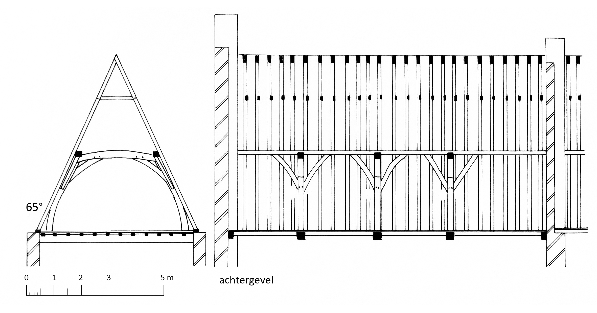

8 Sporenkappen met flieringen op schaargebinten
8.1 Sporenkappen met flieringen op schaargebinten en met een hanenbalk
8.1.1 Sint-Jansstraat 15, huis Oudt Inghelandt, oostvleugel van het achterhuis
Zoals vermeld (zie 6.1.2) bleef in het voorhuis van deze huisvleugel de oorspronkelijke 13de-eeuwse kapconstructie gedeeltelijk bewaard1. Dit is niet het geval in het achterhuis waar een jongere kap met een dakhelling van 55° bewaard bleef. Deze sporenkap van 12 sporenparen telt per sporenpaar één hanenbalk die halfhouts verbonden is. De flieringen rusten op een kromstijlgebinte waarvan de korbelen met een pen-en-gat verbinding zijn vastgezet. Dit is eveneens het geval voor de onderkant van de schoren, waarvan de bovenkant echter is opgenageld. Er zijn geen telmerken waargenomen.
Twee van de vier genomen boorkernen leverden een middelcurve op die bij vergelijking met referentiekalenders een duidelijke datering naar voor bracht. De jongst gemeten jaarring dateert uit 1383d. Afhankelijk van het geschatte aantal ontbrekende jaarringen moet de veldatum van het eikenhout te situeren zijn tussen 1384 en 1404d2.
8.1.2 Sint-Jansstraat 15, huis Oudt Inghelandt, achterbouw van de oostvleugel
Waarschijnlijk in de late 16de eeuw werd deze huisvleugel uitgebreid met een achterbouw en een traptoren. De sporenkap van 25 sporenparen is identiek aan deze in het achterhuis van de oude oostvleugel. De telmerken op de drie kromstijlgebinten staan echter niet meer in de juiste volgorde en zijn nauwelijks zichtbaar. Het lijkt er op dat de kap in de late 16de eeuw is herplaatst waarbij de samenstellende delen van de gebinten werden bijgewerkt.
Omwille van het snelle en onregelmatige groeipatroon van het eikenhout werden geen stalen genomen voor dendrochronologisch onderzoek. Gezien de typologische overeenkomsten met de gedateerde dakkap van het achterhuis van de rechtervleugel is het niet onmogelijk dat alvast de kromstijlgebinten zijn samengesteld uit hergebruikte onderdelen.

8.1.3 Hospitaal Onze-Lieve-Vrouw van de Potterie, klooster
De 23,8 m lange en 5,65 m brede zolder van het klooster is overdekt met een sporenkap van 55 sporenparen die gedragen worden door flieringen op acht lichte schaargebinten3 (Fig. 6.18: D). De sporen hebben een doorsnede van 10 op 10 cm en staan hart op hart gemiddeld 40 cm uiteen. De hanenbalken zijn halfhouts verbonden met de sporen. Bij de schaargebinten zijn de korbelen met een pen-en-gat verbinding vastgezet terwijl de schoren zowel boven- als onderaan koud zijn opgenageld. De getrokken telmerken zijn aangebracht op de hanenbalken en sporen maar bevinden zich niet (meer?) in de juiste volgorde. De dakhelling bedraagt 57°.
Van de acht genomen boorkernen konden er vijf worden gebruikt om, zij het met enige moeite, een middelcurve te berekenen. Deze leverde goede resultaten op bij de vergelijking met referentiekalenders, waardoor de jongste gemeten ring in 1469d kon gedateerd worden. Het spinthout dat nog op twee stalen aanwezig was, laat toe de veldatum te situeren tussen 1470 en 1485d4.
8.1.4 Hospitaal Onze-Lieve-Vrouw van de Potterie, keuken
Deze kleine zolder is overdekt met een sporenkap van oorspronkelijk 21 sporenparen (Fig. 6.18: B). De sporen hebben een doorsnede van 9 op 9 cm en staan hart op hart 35 cm uiteen. De halfhoutse verbindingen van de hanenbalken en de sporen zijn met een houten toognagel geborgen. De flieringen rusten op drie schaargebinten en, tegen de achtergevel van de ziekenzaal, op een stijlgebinte. Bij deze gebinten zijn de pen-en-gat verbindingen van de korbelen telkens met twee toognagels geborgen terwijl de schoren koud zijn opgenageld.
Omwille van het snelle groeipatroon van het eikenhout werden geen monsters genomen voor een dendrochronologische datering. De keuken dateert waarschijnlijk uit dezelfde bouwcampagne als het hierboven vermelde klooster.
8.1.5 Onze-Lieve-Vrouwekerk, oude sacristie
De zolder boven de oude sacristie, gelegen aan de zuidzijde van de kooromgang, is 10,3 m lang en 6,7 m breed5. De sporenkap telt 29 sporenparen. De sporen staan hart op hart 35 cm uiteen en hebben een doorsnede van 9 x 9 cm. De flieringen rusten op drie lichte schaargebinten en twee stijlgebinten tegen de eindgevels. De verbindingen tussen de stijlen en de dekbalken zijn van het pen-en-gat type, alle andere verbindingen zijn opgenageld. Elk sporenpaar is voorzien van een hanenbalk die halfhouts met de sporen verbonden is. De getrokken telmerken op de sporen staan niet de juiste volgorde.

De bouw van de oude sacristie wordt in de 15de eeuw gesitueerd. Een zeer gelijkaardige kap bevindt zich boven het portaalgebouw tegen de zuidelijke zijbeuk van de kerk. De flieringen rusten op vijf lichte schaargebinten. De bouw van dit portaal is waarschijnlijk te situeren na de bouw van de zuidelijke zijbeuk (1454-1464d) (zie 7.2.5).
8.1.6 Sint-Janshospitaal, huis van de meester van de broeders
Deze sporenkap van 25 sporenparen wordt gedragen door flieringen op vier schaargebinten waarvan de stijlen met een pen-en-gat verbinding in de onderliggende trekbalken zijn vastgezet6. Deze trekbalken liggen ongeveer 15 cm boven de balklaag van de onderliggende meesterkamer.
Aan de oostelijke zijde van de kap zijn de sporen en de korte standzonen met een pen-en-gat verbinding ingelaten in de blokkelen die op een dubbele muurplaat rusten. Bovenaan zijn de standzonen met twee smeednagels op de sporen genageld. Aan de westelijke zijde rusten de daksporen rechtstreeks op een enkele muurplaat. De sporen hebben een doorsnede van 10 op 10 cm en staan hart op hart gemiddeld 35 cm uiteen. De halfhoutse verbinding tussen de hanenbalken en de sporen is telkens met twee smeednagels geborgen. De getrokken telmerken zijn van zuid naar noord aangebracht en vertonen een bijteken aan één zijde. Bij de schaargebinten zijn alle verbindingen tussen stijlen, dekbalk, korbelen en schoren van het pen-en-gat type. Opmerkelijk is dat elke dekbalk van de gebinten halfhouts verbonden is met een dakspoor. De gebinten hebben een eigen nummering waarvan de telmerken aan één zijde voorzien zijn van een bijteken.
Aangenomen wordt dat de kap werd opgericht in 1512-1513, tijdens de verbouwing van het gebouw uit de tweede helft van de 15de eeuw7.
8.1.7 Vlamingstraat 88
Dit merkwaardige breedhuis is onvolledig bewaard maar bevat nog genoeg oorspronkelijke elementen voor een bouwhistorisch onderzoek8. Vooral de dakconstructie, een laatmiddeleeuwse sporenkap van 21 sporenparen en een dakhelling van 60°, is goed bewaard. De daksporen hebben een doorsnede van 8 x 8 cm, staan hart op hart 38 cm uiteen en zijn halfhouts door een hanenbalk verbonden. De flieringen worden gedragen door twee schaargebinten en twee stijlgebinten tegen de zijgevels. De dekbalken en korbelen van de gebinten zijn met pen-en-gat verbindingen vergaard, de schoren daarentegen zijn opgenageld. Een grote driehoekige raveling in de voorzijde van het dak wijst uit dat de straatgevel bekroond werd door een grote dakkapel. De uitkragende straatgevel, waarvan sporen zichtbaar zijn in de balklagen van de verdiepingen, en de grote dakkapel zijn duidelijk weergegeven op de stadskaart van Marcus Gerards uit 1562.
8.1.8 Sint-Salvatorskathedraal, Schoenmakerskapel en noordelijke kooromgang
Tot de weinige kapconstructies die ontsnapten aan de grote kerkbrand in 1839 behoren deze boven de 14de-eeuwse Schoenmakerskapel en de eerste drie traveeën van de noordelijke kooromgang9. De kap op de kooromgang telt vier schaargebinten, de kap van de Schoenmakerskapel twee. Luc Devliegher vermeldt de kappen in zijn studie van de kathedraal maar geeft geen datering10.
8.1.9 Jozef Suvéestraat 2
Dit gotische diephuis was waarschijnlijk het hoofdgebouw van een omvangrijk domein (Hof van Lattiloye) dat eveneens J. Suvéestraat 4 en Braambergstraat 10 omvatte11. In 1991 werd hier een zolderappartement ingericht waarbij veel origineel materiaal verloren ging. Gedetailleerd onderzoek is daardoor niet meer mogelijk. Uit literatuur konden wel volgende gegevens verzameld worden12. De 52 sporenparen zijn samengesteld met sporen met een sectie van 9 x 9 cm en zijn elk voorzien van een halfhouts verbonden hanenbalk die met twee ijzeren nagels is vastgezet. Er zijn vijf getelmerkte schaargebinten, waarin alle verbindingen van het pen-en-gat type zijn, met uitzondering van de top van de schoren.
In het links (zuidoostelijk) hiervan gelegen kleiner volume bevindt zich een sporenkap met een schaargebinte. De langsvleugel rechts van het hoofdgebouw bevat een sporenkap met 19 sporenparen en een schaargebinte. De hanenbalken dragen telmerken.
8.1.10 Hoogstuk 61
In dit vermoedelijk 15de-eeuwse woonhuis worden de moerbalken ondersteund door korbeelstellen waarvan de balksleutels versierd zijn met musicerende engelfiguren13. Tot rond 1945 waren nog twee laatgotische schouwen bewaard. De sporenkap wordt gedragen door twee schaargebinten14. In een latere fase werden gordingen en een nokbalk ingebracht.
8.1.11 Gouden-Handstraat 17
Dit monumentale pand is een samengesteld huis met aan de westzijde een diephuis en aan de oostzijde een breedhuis15. De kap van het breedhuis is uitgevoerd in mooi gekantrecht eikenhout. De sporen hebben een doorsnede van 10 x 10 cm en staan hart op hart 40 cm uiteen. Ze bestaan uit twee stukken waarbij het onderste gedeelte tegen de flieringen is opgenageld.
De gebinten bestaan van west naar oost uit een stijlgebinte, twee schaargebinten, twee stijlgebinten aan weerszijden van een binnenmuur (bakstenen van 18,5 x 4,5 cm groot), een schaargebinte en, blijkens de pengaten in de flieringen, een verdwenen stijlgebinte tegen de oostgevel. De telmerken op de gebinten zijn van west naar oost aangebracht, met een bijteken aan de noordzijde. Alle verbindingen in deze kap zijn van het pen-en-gat type.
8.1.12 Nieuwstraat 5, Hof van Beveren
Deze 15de-eeuwse patriciërswoning, die ooit bewoond werd door hertog Filips de Goede (1396-1467), is een complex pand op een L-vormige plattegrond16. Het bestaat uit een voorhuis met ingebouwde traptoren en een haakse dwarsvleugel waarvan de kap gedeeltelijk bewaard bleef.
De hanenbalken bevinden zich dichtbij de nok, zijn halfhouts verbonden en met twee smeedijzeren nagels vastgezet. Uit de telmerken op de sporen en de hanenbalken blijkt dat de kap oorspronkelijk 44 sporenparen omvatte17.
8.1.13 Hoogstraat 8, huis ’t Fransche Schild
Het oorspronkelijke dwarshuis dateert waarschijnlijk uit ca. 1300 maar werd in de 15de eeuw grotendeels herbouwd en in de 16de en 18de eeuw ingrijpend verbouwd. Het pand maakt deel uit van huis De Zeven Torens18. De 18de-eeuwse gordingenkap met schaar- en nokgebinten is duidelijk een verbouwing van de 16de-eeuwse sporenkap. Hiervan zijn de vijf schaargebinten en de flieringen bewaard gebleven, evenals een groot aantal van de daksporen. De sporen hebben een doorsnede van 9 x 8 cm en dragen getrokken telmerken. Per sporenpaar was er een halfhouts verbonden hanenbalk.
8.1.14 Noordzandstraat 7
Behalve de tot open winkelruimte verbouwde begane grond is dit kleine diephuis vrij goed bewaard19. Het voorhuis omvat drie verdiepingen, het achterhuis twee. Merkwaardig zijn de balksleutels met een peerkraalprofiel, het houten spreidsel tussen de kinderbalken, en de houten draaitrap met zware trappaal.
In de zolder van het achterhuis zijn enkel de sporenparen en de flieringen van de sporenkap bewaard gebleven. Nagelsporen in de flieringen en andere bouwsporen tonen aan dat tegen de gevels stijlgebinten stonden opgesteld en een schaargebint in het midden van de zolder.
Op de zolderverdieping van het voorhuis is de sporenkap completer bewaard. De getelmerkte hanenbalken bevinden zich dichtbij de nok en zijn halfhouts verbonden met de daksporen. Tegen de achtergevel stond vroeger een stijlgebinte. Bij de voorgevel is de oorspronkelijke toestand minder duidelijk. Misschien verdween hier een uitkragende houten gevel. Van de twee bestaande schaargebinten zijn alle elementen opgenageld met smeedijzeren nagels.
8.1.15 Kraanplein 6, Huis Ieper, oostelijk diephuis
Het rechtse, meest oostelijk gelegen diephuis dateert in oorsprong uit de vroege 13de eeuw maar werd meerdere keren verbouwd20. De bestaande dakkap (zie 7.3.1, Fig. 7.10) behoort tot een verbouwing omstreeks 1500 in bakstenen van 21 x 5 cm.
De sporen van deze kap hebben een doorsnede van 9,5 x 11 cm tot 10 x 10 cm en staan hart op hart 30 cm uiteen. De hanenbalken zijn met een pen-en-gat verbinding in de sporen vastgezet. De dekbalken van de zeven kromstijlgebinten vertonen nog de inkepingen van een verdwenen vlieringzolder. De schoren van de gebinten zijn onderaan opgenageld terwijl alle andere verbindingen van het pen-en-gat type zijn. De muurplaten liggen op een 70 cm hoge borstwering. In de buitenzijde van de kromstijlen is een blokkeel vastgezet dat op de borstwering ligt en onder de muurplaat is vastgemaakt. Opmerkelijk is dat ter hoogte van de schaargebinten de sporen halfhouts verbonden zijn met de dekbalk van het gebinte. De getrokken telmerken op de gebinten verlopen van noord naar zuid en zijn aan de oostzijde voorzien van een bijteken. Aan de westzijde van de kap zijn de zijkanten van de spantbenen en de schoren voorzien van een eigen nummering van 1 tot 12, eveneens van noord naar zuid.
In deze kap werden negen boorkernen genomen die samen een 107 jaar lange middelcurve vormen, waarvoor een betrouwbare einddatering in 1485d werd gevonden. Dit betekent dat de veldatum te situeren is tussen 1488 en 1518d21.
8.1.16 Mariastraat 44, zuidelijk huis
Van de vier 16de-eeuwse woonhuizen die in 1913 grondig werden verbouwd22 bleef in het zuidelijke pand een oorspronkelijke sporenkap bewaard. De kap steunt op vrijstaande schaargebinten en stijlgebinten tegen de eindgevels en brandmuren. De stijlen van deze laatste gebinten rusten op consoles in Doornikse kalksteen.
In de gebinten zijn alle verbindingen van het pen-en-gat-type. De meeste korbelen en schoren hebben een licht gebogen vorm. De hanenbalken zijn halfhouts verbonden met de sporenparen en vastgezet met telkens twee smeedijzeren nagels. De kap werd later verstevigd met gordingen en een nokbalk op nokstijlen.
8.1.17 Vlamingstraat 35, huis Ter Buerse
Het 13de-eeuwse huis Ter Buerse werd in 1453 herbouwd23. Wellicht gelijktijdig werd het huis uitgebreid met een achterhuis, lager dan het hoofdgebouw en met een poort aan de Grauwwerkersstraat. De hanenbalken van de sporenkap zijn halfhouts verbonden met de daksporen. Deze rusten op flieringbalken die tegen de achtergevel op een stijlgebinte liggen en verder op oorspronkelijk drie schaargebinten, waarvan één verdween bij de inbreng van een trap. Alle verbindingen in de gebinten zijn van het pen-en-gat-type en met houten pennen vastgezet.
8.1.18 Academiestraat 8
De naaldhouten sporen hebben een doorsnede van 10 x 10 cm en staan hart op hart gemiddeld 40 cm uiteen24. Van de halfhouts verbonden hanenbalken bleven er slechts een zevental bewaard. De muurplaten liggen op 110 cm hoge borstweringen. Er zijn drie eiken gebinten die de flieringen dragen. Vooraan bevinden zich twee oorspronkelijke kromstijlgebinten die met pen-en-gat verbindingen zijn samengesteld. De schoren zijn opgenageld. Het derde gebinte staat samen met gordingen en steekschoren op de gebinten die later zijn ingebracht. Er zijn geen eindgebinten.
8.1.19 Witteleertouwersstraat 15
Dit woonhuis omvat twee diephuizen25. Beide huizen bevatten een sporenkap op schaargebinten. De hanenbalken zijn halfhouts verbonden met de daksporen en telkens met twee smeedijzeren nagels vastgezet.
8.2 Sporenkappen met flieringen op schaargebinten en met twee hanenbalken.
8.2.1 Sint-Janshospitaal, middelste ziekenzaal
Deze zaal is binnenwerks 11,95 m (oostzijde) tot 12,5 m breed (westzijde) en heeft een lengte van 42 meter26. De sporenkap van de ziekenzaal rust op 7,2 m hoge gebinten: negen kromstijlgebinten en een stijlgebinte tegen de westgevel. Tegen de oostgevel werd geen gebinte aangebracht maar zijn de flieringbalken en hun schoren rechtstreeks in de muur ingebracht.

De muurplaten lagen op 3,6 m hoge borstweringen die echter nagenoeg overal werden verhoogd bij de aanbouw van de zuidelijke en later de noordelijke ziekenzaal. Zo staan de ingekorte daksporen aan de zuidkant op een strijkbalk op consoles en in de noordoostelijke hoek van de zolder op een enkele muurplaat. Alleen in de noordwestelijke hoek van de zolder is de oorspronkelijke kapvoet weliswaar gedeeltelijk bewaard gebleven. Op de dubbele muurplaat liggen grotendeels vernieuwde blokkelen waarop nu korte standzonen zijn aangebracht. Boven deze standzonen bevinden zich echter hoge open pengaten voor grotere standzonen terwijl er eveneens een tiental oorspronkelijke blokkelen zijn bewaard gebleven.

Deze gegevens laten toe om de oorspronkelijke kapvoet te reconstrueren. Op de dubbele muurplaat lagen blokkelen die 20 tot 30 cm buiten de binnenste muurplaat uitstaken. Het uitkragende gedeelte is voorzien van een eenvoudig kwartrond profiel. Hierop stonden gebogen, ongeveer 1,2 m hoge standzonen die met een pen-en-gat verbinding in de daksporen waren vastgezet. Deze vrij uitzonderlijke opstelling laat zich verklaren door het feit dat hier, door de hoge gebinten, de traditionele voetraveling niet kon toegepast worden. Gelijkaardige oplossingen kenmerken ook de constructief verwante kappen van de ziekenzalen van het Bijlokehospitaal in Gent (1251-1255d) en het Sint-Janshospitaal in Damme (1270-1285d).
De daksporen zijn in twee afzonderlijke, niet met elkaar verbonden stukken uitgevoerd; het onderste deel van de kapvoet tot op de flieringbalk, het bovenste van net onder de flieringbalk tot in de nok. In zowel de stijl- als de kromstijlgebinten zijn alle verbindingen van het pen-en-gat type, behalve de korbelen van de kromstijlgebinten. Deze grote gebogen korbelen zijn immers niet in één stuk uitgevoerd maar in twee of drie onderdelen. Hiervan is het grootste onderdeel met pen-en-gat in de dekbalk en de kromstijlen vastgezet. De kleinere stukken zijn koud opgenageld met smeedijzeren nagels.
Het stijlgebinte tegen de westgevel is verstijfd met een geschoorde tussenbalk en lange balken tussen de stijlen en de binnenste muurplaat. De kromstijlen zijn in de hoge borstweringen verankerd met een blokkeel dat met pen-en-gat in de stijlen is vastgemaakt. Aan beide zijden van de dekbalken van de gebinten liggen twee flieringbalken met blokkelen die met pen-en-gat in de daksporen zijn vastgemaakt. De blokkelen dragen ongeveer 1,6 m hoge standzonen die met pen-en-gat in de daksporen zijn vastgezet. Enkel de buitenste flieringbalken zijn voorzien van gebogen schoren, behalve bij de west- en oostgevel waar ook de binnenste flieringbalk met een schoorstuk is verstijfd. Hierboven zijn de sporenparen onderling verbonden door twee hanenbalken die met pen-en-gat zijn vastgezet.
Boorkernen uit vier kromstijlen werden onderzocht door het dendrochronologisch laboratorium Stichting RING. Twee boorkernen leverden een datering op waardoor de veldatum van het hout kan worden gesitueerd tussen 1226 en 1241d27. De dakkap van de middelste ziekenzaal is hiermee de oudst gedateerde sporenkap op kromstijlgebinten in de Benelux.
8.2.2 Twijnstraat 13, huis In Sint-Jacobs
Het huidige voorkomen van dit in oorsprong vroeg 13de-eeuwse huis is het resultaat van een verbouwing die, blijkens de bakstenen van 21 x 4,5 cm groot, kan gedateerd worden in of na het midden van de 14de eeuw28. De bestaande dakkap bevat nog 23 sporenparen van de laat-middeleeuwse sporenkap, een aantal oorspronkelijke gebinten en later ingebrachte stapelgebinten. In de oorspronkelijke kap was elk sporenpaar verbonden door twee halfhouts geborgen hanenbalken en ondersteund door flieringen die zelf rustten op drie kromstijlgebinten. Tegen de voor-, achtergevel en beide zijden van de brandmuur rustten de flieringen op stijlgebinten waarvan slechts één bewaard bleef. Alle verbindingen in de gebinten zijn van het pen-en-gat type. De gebinten zijn getelmerkt van achter- naar voorgevel. De sporenparen hadden een eigen nummering die wellicht in dezelfde richting verliep.
8.2.3 Gouden-Handstraat 18
Het lagere westelijk deel van deze woning is duidelijk het oudste bouwvolume en dateert vermoedelijk uit de vroege 16de eeuw29. De half verzonken kelder is nog steeds overdekt door een eikenhouten balklaag met moerbalken op balksleutels en natuurstenen consoles. In de achtergevel zijn nog twee oorspronkelijke vensternissen met gekoppelde tudorboogjes op zandstenen consoles zichtbaar.
De dakkap rust op twee schaargebinten waarvan de meeste korbelen niet oorspronkelijk zijn; de telmerken zijn met een beitel aangebracht. Alle verbindingen zijn van het pen-en-gat type. Er zijn geen eindgebinten. De twee hanenbalken zijn halfhouts verbonden met de daksporen. De gordingen op kruisschoren zijn een latere aanpassing van de kap.
8.2.4 Gouden-Handstraat 22
Dit kleine diephuis bezit een bakstenen straatgevel uit 1632 maar is wellicht in de 16de eeuw opgericht30. De bestaande kapconstructie is een heterogeen geheel van schaar- en stijlgebinten, nokbalk, gordingen en kepers. Oorspronkelijk was de kap een sporenkap op schaargebinten met twee hanenbalken per sporenpaar. De verbinding tussen hanenbalken en daksporen was halfhouts. Slechts één schaargebint is bewaard gebleven. De gebeitelde telmerken zijn aangebracht van straat- naar achtergevel, maar talrijke sporen zijn voorzien van een tweede, dus ouder telmerk.
8.2.5 Spiegelrei 5, huis De Witte Meuninck
Op de plaats van dit huis stond in het begin van de 13de eeuw het refugehuis van de abdij Ten Duinen in Koksijde31. Het pand werd herhaaldelijk uitgebreid en verbouwd, waardoor resten uit de vroegste bouwgeschiedenis weinig omvangrijk zijn. De kepers in de huidige 17de-eeuwse dakkap zijn bijna allemaal hergebruikte daksporen in naaldhout met getrokken telmerken en een sectie van gemiddeld 7,5 op 7,5 cm. De sporen waren onderling verbonden door twee halfhouts aangebrachte hanenbalken waarvan er een drie bewaard zijn gebleven. De dakkap werd waarschijnlijk opgericht na een brand van het huis in 1489. Behalve de bewaarde daksporen is de enige getuigenis van deze kap te vinden aan de binnenzijde van de voorgevel. Hier bevindt zich de uitsparing voor een stijlgebinte met korbelen dat deels in de muur was ingewerkt. Op basis van de locatie van de moerbalken kan een sporenkap worden gereconstrueerd met flieringen die rustten op vier schaar- of kromstijlgebinten en op een stijlgebinte aan de straatzijde32.
8.2.6 Jan van Eyckplein 8, huis De Roode Steen
Het oorspronkelijke huis uit het begin van de 13de eeuw (zie 12.1) werd verbouwd omstreeks 145033. Waarschijnlijk werd toen de huidige, goed bewaarde sporenkap op drie schaargebinten opgericht34. De daksporen zijn door twee hanenbalken verbonden en lopen niet door tot de muurplaat maar worden gedeeld door de flieringen. De sporen boven de flieringen zijn oorspronkelijk. De onderste hanenbalken met getrokken telmerken zijn grotendeels hergebruikte onderdelen uit de oorspronkelijke kap van het huis uit het begin van de 13de eeuw.
De daksporen onder de flieringen droegen ook telmerken maar zijn grotendeels vernieuwd of verplaatst. De telmerken starten aan de kant van de Spiegelrei, waar de eerste negen sporenparen aan weerszijden zijn verbonden door een schuine windlat boven de flieringen. Bij de schaargebinten zijn de korbelen met pen-en-gat geborgen in zowel gebintstijl als dekbalk, terwijl de schoren enkel in de gebintstijl zijn geborgen en opgenageld op de flieringen.

De matige kwaliteit van het hout verhinderde een dendrochronologische datering van deze 15de-eeuwse kap. Wel werd onderzoek uitgevoerd op vijf stukken spreidsel van de balklaag van de gelijkvloerse verdieping die nagenoeg zeker tot dezelfde verbouwing uit de 15de eeuw behoort. Bij het dendrochronologisch onderzoek van de groeiringpatronen kon een middelcurve van meer dan 200 jaar lang berekend en gedateerd worden. Na vergelijking met referentiekalenders kan een terminus post quem datering van 1436d35 voor het bouwhout aangenomen worden.
8.2.7 Steenstraat 8, huis Het Schotterkin
Dit kleine huis werd verbouwd in 1727 waarbij de bestaande barokgevel werd opgetrokken36. Toch zijn nog een aantal resten aanwezig die verwijzen naar de middeleeuwse oorsprong van het pand. De huidige dakkap bestaat grotendeels uit nieuwe kepers, maar tegen de achtergevel zijn nog een aantal daksporen bewaard die telkens door één hanenbalk zijn verbonden. Uit de inkepingen in deze daksporen en de bestaande resten blijkt dat de waarschijnlijk 15de- of 16de-eeuwse sporenkap rustte op lichte schaargebinten en dat elk sporenpaar door twee hanenbalken was verbonden.
8.2.8 Korte Riddersstraat 10, huis Sint-Martinus
Het kleine hoekhuis werd verbouwd in 1647 maar bewaart nog diverse getuigen van zijn middeleeuwse geschiedenis37. De huidige kapconstructie is een erg verbouwde sporenkap op schaargebinten uit de 15de of 16de eeuw waar in de 17de eeuw nokgebinten zijn in opgesteld. Bij de schaargebinten met getrokken telmerken zijn de korbelen met een pen-en-gat verbinding vastgezet, terwijl de verdwenen schoren opgenageld waren. De enkele bewaarde daksporen vertonen een inkeping voor de flieringbalk en inkavelingen voor twee tot drie halfhouts verbonden hanenbalken.
8.2.9 Markt 29
Dit diephuis bewaart een sporenkap waarvan zowel de daksporen als de gebinten rusten op een muurplaat, aan de westzijde rustend op natuurstenen consoles die bovenaan de borstwering zijn aangebracht, aan de oostzijde rechterzijde op een verjonging van de borstwering38. De twee hanenbalken zijn halfhouts verbonden met de daksporen. In de drie schaargebinten zijn alle verbindingen genageld. De daksporen dragen van voor naar achter de telmerken 3 tot 31. Dit betekent dat de eerste twee sporenparen verdwenen toen rond 1678 een houten gevel met overkragingen werd vervangen door een bakstenen gevel. De huidige gevel werd opgetrokken omstreeks 1900 naar het 17de-eeuwse ontwerp.
8.2.10 Assebroek, Bossuytlaan 35, kasteel Zevekote
De oudste vermelding van het leengoed Zevekote, dat afhing van de Burg van Brugge, is in 125839. Het huidige gebouw gaat terug op een 16de- tot 17de-eeuws kasteeltje met een L-vormige plattegrond en een traptoren in de oksel van het gebouw. De twee kapconstructies zijn gedeeltelijk bewaard, voornamelijk de licht uitgevoerde schaargebinten en de sporen. Alleen enkele van de bovenste hanenbalken zijn aanwezig. Alle verbindingen zijn opgenageld. De verbinding tussen de sporen en de hanenbalken is halfhouts.
8.3 Sporenkappen met flieringen op schaargebinten en met onderste hanenbalk op fliering
8.3.1 Steenstraat 20, huis In Slype
Waarschijnlijk na een brand (zie 6.1.5) werd een nieuwe dakkap gebouwd40. Tegen de achtergevel bleven wel vijf sporenparen bewaard van de sporenkap uit het einde van de 13de eeuw. Hiervoor bevinden zich 17 sporenparen met twee halfhouts verbonden hanenbalken. Een aantal hanenbalken zijn duidelijk hergebruikte stukken van sporen uit de oorspronkelijke dakkap. De getrokken telmerken zijn aangebracht van voor- naar achtergevel. De afwezigheid van het eerste sporenpaar wijst op een houten gevel met overkragingen, in 1716 vervangen door de huidige klokgevel. De oorspronkelijk 25 sporenparen en onderste hanenbalken worden gedragen door flieringbalken die zelf rusten op vier schaargebinten. Alle verbindingen in de schaargebinten zijn opgenageld. De huidige dakkap dateert waarschijnlijk uit de 15de of 16de eeuw.
8.3.2 Sint-Jansstraat 15, huis Oudt Inghelandt, westelijke vleugel
De oorspronkelijke sporenkap uit de 13de eeuw werd verbouwd in het begin van de 16de eeuw41. Het deel bij de voorgevel is volledig verdwenen, centraal zijn twaalf originele sporenparen bewaard en bij de achtergevel staan twaalf nieuwe sporenparen opgesteld, voorzien van twee halfhouts verbonden hanenbalken. De flieringen van de nieuwe kap ondersteunen de onderste hanenbalk en rusten op schaargebinten, waarvan er slechts één gedeeltelijk bewaard is. Alle verbindingen zijn opgenageld. Er zijn geen telmerken.
8.3.3 Mariastraat 1B
De licht uitgevoerde sporenkap van dit kleine diephuis uit de 16de eeuw is volledig in naaldhout opgetrokken42. De twee rijen hanenbalken en de schoren en korbelen van de schaargebinten zijn opgenageld. Er zijn geen telmerken. De dakhelling bedraagt 60°.
8.3.4 Verversdijk 22A
Het in oorsprong 15de-eeuwse diephuis is verdeeld in een voor- en een achterhuis43. Enkel het achterhuis is grotendeels in zijn oorspronkelijke toestand bewaard. De sporenkap bevat twee rijen halfhouts verbonden hanenbalken die telkens met twee smeedijzeren nagels zijn vastgemaakt. De schoren en korbelen van de twee lichte schaargebinten zijn koud opgenageld. Er staan geen gebinten tegen de gevels.
8.3.5 Spinolarei 2, huis De Patience
Tien meter achter de huidige rooilijn ligt een klein middeleeuws huis dat opklimt tot de vroege 13de eeuw maar in de 14de en late 15de eeuw belangrijke verbouwingen meemaakte44. Het huis is bekend voor de zeer rijke muurschilderingen uit het einde van de 14de eeuw45. De verbouwde dakkap bewaart nog de gebinten en een groot aantal daksporen van een laatmiddeleeuwse sporenkap. Deze rustte op twee schaargebinten en twee stijlgebinten waarvan enkel dit tegen de achtergevel bewaard bleef. De verbindingen in de gebinten zijn van het pen-en-gat type, met uitzondering van de schoren die koud zijn opgenageld. De twee verdwenen hanenbalken waren halfhouts verbonden met de daksporen. Waarschijnlijk werd de kap opgetrokken omstreeks 1500.
8.3.6 Vlamingstraat 98
De oorspronkelijke dakkap van het vroegere achterhuis van Kortewinkel 1, vandaag deel van Vlamingstraat 98, bestaat uit twee schaargebinten die op de moerbalken van de onderliggende verdieping staan46. Tegen de eindgevels staan geen gebinten. De zware schaargebinten bestaan bijna volledig uit hergebruikte balken, waarschijnlijk afkomstig uit een houten gevel. Nagenoeg alle verbindingen zijn opgenageld. Er zijn slechts enkele pen-en-gatverbindingen.
Waarschijnlijk in de 17de eeuw, toen ook andere verbouwingen in het pand plaatsvonden, werden alle hanenbalken verwijderd en werd op elk schaargebinte een tweede schaargebinte en een nokgebinte met geschoorde nokstijl geplaatst. In deze gebinten zijn alle verbindingen genageld. Op basis van de overige kenmerken van dit pand kan de kap waarschijnlijk in de tweede helft van de 15de eeuw worden gedateerd.
Huis Oudt Inghelandt in de inventaris van het bouwkundig erfgoed: https://inventaris.onroerenderfgoed.be/erfgoedobjecten/29704.↩︎
Eeckhout & Houbrechts 2002, 24-31.↩︎
Het hospitaal Onze-Lieve-Vrouw van de Potterie in de inventaris van het bouwkundig erfgoed: https://inventaris.onroerenderfgoed.be/erfgoedobjecten/83197.↩︎
Eeckhout & Houbrechts 2002, 68-75.↩︎
Van Eenhooge 2009, 39-40. De Onze-Lieve-Vrouwekerk in de inventaris van het bouwkundig erfgoed: https://inventaris.onroerenderfgoed.be/erfgoedobjecten/82359.↩︎
Het broederklooster van het Sint-Janshospitaal in de inventaris van het bouwkundig erfgoed: https://inventaris.onroerenderfgoed.be/erfgoedobjecten/82411.↩︎
Esther 1976, 297-301.↩︎
Onderzoek uitgevoerd tijdens verbouwingen in 2005. Vlamingstraat 88 in de inventaris van het bouwkundig erfgoed: https://inventaris.onroerenderfgoed.be/erfgoedobjecten/29916.↩︎
De Sint-Salvatorskathedraal in de inventaris van het bouwkundig erfgoed: https://inventaris.onroerenderfgoed.be/erfgoedobjecten/29716.↩︎
Devliegher 1981, 120, fig. 13.↩︎
Gilté & Vanwalleghem 2004a. Jozef Suvéestraat 2 in de inventaris van het bouwkundig erfgoed: https://inventaris.onroerenderfgoed.be/erfgoedobjecten/81959.↩︎
Devliegher 1975², 153; Devliegher 1994, 78-79.↩︎
Hoogstuk 61 in de inventaris van het bouwkundig erfgoed: https://inventaris.onroerenderfgoed.be/erfgoedobjecten/83269.↩︎
Devliegher 1975², 136; Gilté & Vanwalleghem 2004b, 452.↩︎
Gouden-Handstraat 17 in de inventaris van het bouwkundig erfgoed: https://inventaris.onroerenderfgoed.be/erfgoedobjecten/82909.↩︎
Luc Devliegher vermeldt 15de-eeuwse gebeeldhouwde balksleutels met musicerende engelen (Devliegher 1975², 248, afbn. 575 en 576). Het Hof van Beveren in de inventaris van het bouwkundig erfgoed: https://inventaris.onroerenderfgoed.be/erfgoedobjecten/29524.↩︎
Esther 1998, 81-85.↩︎
Huis ’t Fransche Schild in de inventaris van het bouwkundig erfgoed: https://inventaris.onroerenderfgoed.be/erfgoedobjecten/29336↩︎
In de inventaris van het bouwkundig erfgoed wordt Noordzandstraat 7 alleen vermeld in de straatinleiding, https://inventaris.onroerenderfgoed.be/erfgoedobjecten/104379↩︎
Huis Ieper in de inventaris van het bouwkundig erfgoed: https://inventaris.onroerenderfgoed.be/erfgoedobjecten/29424.↩︎
Haneca 2014e.↩︎
Mariastraat 44 in de Inventaris van het bouwkundig erfgoed: https://inventaris.onroerenderfgoed.be/erfgoedobjecten/82415.↩︎
Huis Ter Buerse in de inventaris van het bouwkundig erfgoed: https://inventaris.onroerenderfgoed.be/erfgoedobjecten/29897.↩︎
In de inventaris van het bouwkundig erfgoed wordt Academiestraat 8 alleen vermeld in de straatinleiding, https://inventaris.onroerenderfgoed.be/erfgoedobjecten/104314↩︎
Gilté & Vanwalleghem 2004a, 257. Witteleertouwersstraat 15 in de inventaris van het bouwkundig erfgoed: https://inventaris.onroerenderfgoed.be/erfgoedobjecten/82260.↩︎
Esther 1976, 273; Hoffsummer 2009, 192-193. De ziekenzalen van het Sint-Janshospitaal in de inventaris van het bouwkundig erfgoed: https://inventaris.onroerenderfgoed.be/erfgoedobjecten/82410.↩︎
Hanraets 2000.↩︎
Voor de volledige bouwgeschiedenis: Van Eenhooge 2002b, 44-54. Huis In Sint-Jacobs in de inventaris van het bouwkundig erfgoed: https://id.erfgoed.net/erfgoedobjecten/29851.↩︎
Voor een volledige beschrijving: Gilté & Vanwalleghem 2004b, 222. Gouden-Handstraat 18 in de inventaris van het bouwkundig erfgoed: https://inventaris.onroerenderfgoed.be/erfgoedobjecten/82910.↩︎
Gouden-Handstraat 22 in de inventaris van het bouwkundig erfgoed: https://inventaris.onroerenderfgoed.be/erfgoedobjecten/82914.↩︎
Van Eenhooge 2007, 32-36. Huis De Witte Meuninck in de inventaris van het bouwkundig erfgoed: https://inventaris.onroerenderfgoed.be/erfgoedobjecten/82914.↩︎
Idem, 35.↩︎
Huis De Roode Steen in de inventaris van het bouwkundig erfgoed: https://inventaris.onroerenderfgoed.be/erfgoedobjecten/29365.↩︎
Van Eenhooge 2007, 28.↩︎
Fraiture 2002.↩︎
Huis Het Schotterkin in de inventaris van het bouwkundig erfgoed: https://inventaris.onroerenderfgoed.be/erfgoedobjecten/29789.↩︎
Huis Sint-Martinus in de inventaris van het bouwkundig erfgoed: https://inventaris.onroerenderfgoed.be/erfgoedobjecten/29395.↩︎
Markt 29 in de inventaris van het bouwkundig erfgoed: https://inventaris.onroerenderfgoed.be/erfgoedobjecten/29474.↩︎
Kasteel Zevekote in de inventaris van het bouwkundig erfgoed: https://inventaris.onroerenderfgoed.be/erfgoedobjecten/76962.↩︎
Huis In Slype in de inventaris van het bouwkundig erfgoed: https://inventaris.onroerenderfgoed.be/erfgoedobjecten/29798.↩︎
Huis Oudt Inghelandt in de inventaris van het bouwkundig erfgoed: https://inventaris.onroerenderfgoed.be/erfgoedobjecten/29704.↩︎
Mariastraat 1B in de inventaris van het bouwkundig erfgoed: https://inventaris.onroerenderfgoed.be/erfgoedobjecten/29628.↩︎
Esther 1998, 76-77. Verversdijk 22A in de inventaris van het bouwkundig Erfgoed: https://inventaris.onroerenderfgoed.be/erfgoedobjecten/29872.↩︎
Huis De Patience in de inventaris van het bouwkundig erfgoed: https://inventaris.onroerenderfgoed.be/erfgoedobjecten/29770.↩︎
Buyle 1995.↩︎
Vlamingstraat 98 in de inventaris van het bouwkundig erfgoed: https://inventaris.onroerenderfgoed.be/erfgoedobjecten/29921.↩︎